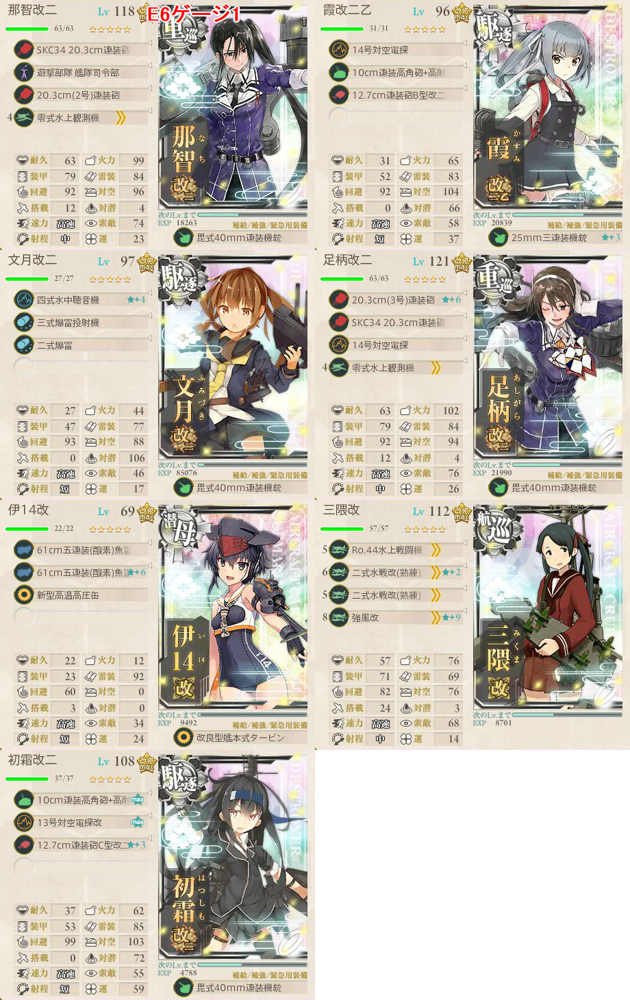
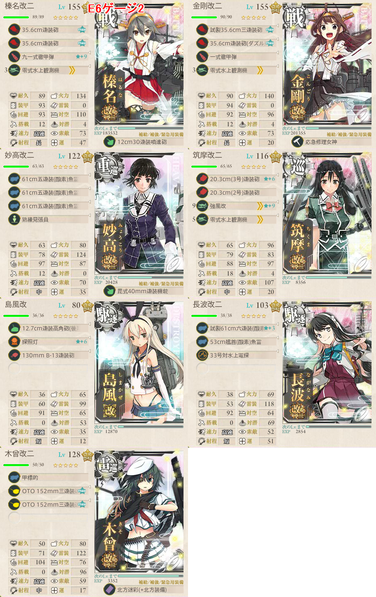
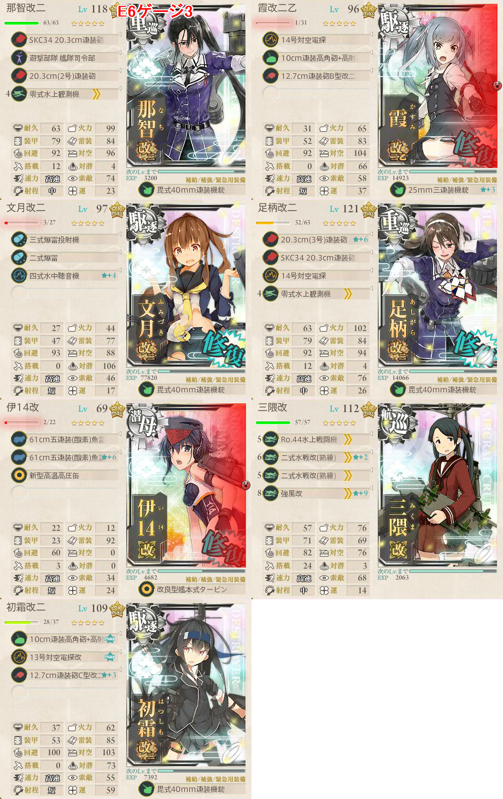

【艦これ】捷号決戦！邀撃、レイテ沖海戦(後篇) E6 サマール沖東方
2018年冬イベント E6（丙作戦）
- トリプルゲージ
ゲージ1
- 志摩艦隊
- ABCDHGOPU
構成

高速統一
駆逐2以上
Hマス用に先制爆雷を１隻用意
空襲戦マスだらけなので、対空カットインは必須
道中及びボスで攻撃を吸わせるため潜水艦を１隻採用
- 警戒陣ならかなり避けてくれる
- もし道中大破しても、遊撃部隊司令部で退避できる
制空補助のために三隈に水上戦闘機フル搭載
駆逐2以上いれば良いので、１隻を雷巡に変えても大丈夫？
基地航空隊
- ボスと空襲マスにそれぞれ１部隊ずつ送り込む
- Cマスは半径1なので、防空部隊をそのまま使い回せる
出撃ログ（丙）
| 回数 | 編成 | 33式 | ルート | 戦果 |
|---|---|---|---|---|
| 1 | 那智 霞 文月 足柄 伊14 三隈 初霜 | 29.99 | ABCDHGOPU | S勝利 |
| 2 | 那智 霞 文月 足柄 伊14 三隈 初霜 | 29.99 | ABCDHGOPU | S勝利（叢雲） |
| 3 | 那智 霞 文月 足柄 伊14 三隈 初霜 | 29.99 | ABCDHGOPU | S勝利（綾波） ゲージ破壊 |
敵編成
| マス | 敵航空戦力 | 敵潜水艦 | 備考 |
|---|---|---|---|
| C | あり | なし | 空襲戦 |
| H | なし | あり | 潜水艦のみ |
| G | なし | なし | 軽巡1 雷巡2 駆逐3 |
| O | あり | なし | ヌ級2 リ級1 ツ級1 駆逐2 |
| P | あり | なし | 空襲戦 |
| U | あり | なし | ボス 連合艦隊 水母棲姫 ヌ級2 ツ級1 駆逐2 + 駆逐6 |
| あり | なし | 最終形態 水母棲姫 ヌ級2 戦艦1 ツ級2 + 駆逐6 | |
ゲージ2
出現ギミック
- Iマス到達
- FJNLI
ボスマス
- FJNLQV
構成

- 全員、予め栗田札をつけておく
- ギミック/ゲージ2ボス共有編成
- 特攻があるとされる島風 長波を採用
- 敵航空戦力がないため、筑摩に水上戦闘機を一つだけ搭載して制空権を取る
基地航空隊
- ボス出現後に基地空襲が来るようになるので、1部隊防空に回す
- 残り部隊はボス集中で良いだろう
出撃ログ（丙）
| 回数 | 編成 | 33式 | ルート | 戦果 |
|---|---|---|---|---|
| 1 | 榛名 金剛 妙高 筑摩 島風 長波 木曾 | 33.55 | FJNLI | ボスマス出現 |
| 2 | 榛名 金剛 妙高 筑摩 島風 長波 木曾 | 33.55 | FJNLQV | S勝利（最上） |
| 3 | 榛名 金剛 妙高 筑摩 島風 長波 木曾 | 33.55 | FJNLQV | S勝利（敷波） |
| 4 | 榛名 金剛 妙高 筑摩 島風 長波 木曾 | 33.55 | FJNLQV | S勝利（磯波） ゲージ破壊 |
敵編成
| マス | 敵航空戦力 | 敵潜水艦 | 備考 |
|---|---|---|---|
| J | なし | なし | リ級1 ネ級1 ツ級1 駆逐3 |
| L | なし | なし | 軽巡1 ツ級1 駆逐4 |
| I | なし | なし | 軽巡1 輸送2 湯級1 駆逐2 |
| Q | なし | なし | 軽巡or重巡1 ネ級1 ツ級1 駆逐3 |
| V | なし | なし | ボス 連合艦隊 戦艦棲姫 リ級2 ツ級1 駆逐2 + 駆逐6 |
ゲージ3
- ABCDHGORW
構成

- ゲージ1とほぼ同等
基地航空隊
出撃ログ（丙）
| 回数 | 編成 | 33式 | ルート | 戦果 |
|---|---|---|---|---|
| 1 | 那智 霞 文月 足柄 伊14 三隈 初霜 | 29.99 | ABCDHGORW | O 伊14退避 S勝利（舞風） |
| 2 | 那智 霞 文月 足柄 伊14 三隈 初霜 | 29.99 | ABCDHGORW | O 伊14退避 S勝利（Гангут） |
| 3 | 那智 霞 文月 足柄 伊14 三隈 初霜 | 29.99 | ABC | 那智大破 |
| 4 | 那智 霞 文月 足柄 伊14 三隈 初霜 | 29.99 | ABCDH | 霞大破 |
| 5 | 那智 霞 文月 足柄 伊14 三隈 初霜 | 29.99 | ABCDHGORW | S勝利（高波） |
| 6 | 那智 霞 文月 足柄 伊14 三隈 初霜 | 29.99 | ABCDHGOR | O 伊14退避 R 霞退避 S勝利（高雄） ゲージ破壊 |
敵編成
| マス | 敵航空戦力 | 敵潜水艦 | 備考 |
|---|---|---|---|
| R | あり | なし | 空襲戦 |
| W | あり | なし | ボス 連合艦隊 空母水鬼 戦艦1 ツ級1 駆逐3 + 駆逐6 |
| あり | なし | 最終形態 空母水鬼 戦艦棲姫 ヌ級1 ツ級1 駆逐2 + 軽巡1 駆逐5 | |
Ташкент掘り
出撃ログ
| 回数 | 編成 | 33式 | ルート | 戦果 |
|---|---|---|---|---|
| 1 | 那智 霞 文月 足柄 伊14 三隈 初霜 | 32.99 | ABCDHGORW | O 伊14退避 R 初霜退避 W S勝利（長良） |
| 2 | 那智 霞 文月 足柄 伊13 三隈 夕立 | 32.84 | ABCDHGORW | S勝利（愛宕） |
| 3 | 那智 霞 文月 足柄 伊13 三隈 夕立 | 32.9 | ABCDHGORW | G 伊13退避 S勝利（長波） |
| 4 | 那智 霞 文月 足柄 伊14 三隈 夕立 | 32.81 | ABCDHGORW | S勝利（夕雲） |
| 5 | 那智 霞 文月 足柄 伊14 三隈 夕立 | 32.81 | ABCDHGORW | O 伊14退避 S勝利（高雄） |
| 6 | 那智 霞 文月 足柄 伊13 三隈 夕立 | 32.9 | ABCDHGORW | R 夕立退避 S勝利（鈴谷） |
| 7 | 那智 霞 文月 足柄 伊13 三隈 夕立 | 32.9 | ABCDHGORW | O 伊13退避 R 夕立退避 W S勝利（舞風） |
| 8 | 那智 霞 文月 足柄 伊14 三隈 初霜 | 33.11 | ABCDHGORW | S勝利（利根） |
| 9 | 那智 霞 文月 足柄 伊14 三隈 初霜 | 33.11 | ABCDHGORW | S勝利（長良） |
| 10 | 那智 霞 文月 足柄 伊14 三隈 初霜 | 33.2 | ABCDHGORW | O 伊14退避 S勝利（鈴谷） |
| 11 | 那智 霞 文月 足柄 伊13 三隈 初霜 | 33.26 | ABCDHGORW | O 伊13退避 R 初霜退避 W S勝利（熊野） |
| 12 | 那智 霞 文月 足柄 伊14 三隈 夕立 | 32.96 | ABCDHGORW | R 夕立退避 S勝利（高波） |
| 13 | 那智 霞 文月 足柄 伊14 三隈 初霜 | 33.26 | ABCDHGO | 伊14 初霜大破 |
| 14 | 那智 霞 文月 足柄 伊14 三隈 初霜 | 33.26 | ABCDHGORW | O 伊14退避 R 三隈退避 W S勝利（鈴谷） |
| 15 | 那智 霞 文月 足柄 伊14 三隈 初霜 | 33.26 | ABCDHGORW | S勝利（夕雲） |
| 16 | 那智 霞 文月 足柄 伊14 三隈 初霜 | 33.26 | ABCDHGORW | O 伊14退避 S勝利（摩耶） |
| 17 | 那智 霞 文月 足柄 伊13 三隈 初霜 | 33.39 | ABCDHGORW | O 伊13退避 S勝利（鈴谷） |
| 18 | 那智 霞 文月 足柄 伊14 三隈 初霜 | 33.39 | ABCDHGORW | O 伊14退避 S勝利（Ташкент） |